Step 1：认识数据
- 用
hu-neuro-pipeline包下载 ERP CORE N170 任务的一个被试（sub-001），数据来自 OSF 项目 pfde9； - 读进 MNE，以下是读到的通道、采样率、时长
data/step2_eog-raw.fif的基本信息如下：采样率 1024 Hz，时长 683.0 秒（约 11 分 23 秒），共 699,392 个采样点，35 个通道。通道（30 个 EEG + 5 个 EOG）
# 通道 类型 # 通道 类型 1 FP1 EEG 19 F8 EEG 2 F3 EEG 20 FC4 EEG 3 F7 EEG 21 FCz EEG 4 FC3 EEG 22 Cz EEG 5 C3 EEG 23 C4 EEG 6 C5 EEG 24 C6 EEG 7 P3 EEG 25 P4 EEG 8 P7 EEG 26 P8 EEG 9 P9 EEG 27 P10 EEG 10 PO7 EEG 28 PO8 EEG 11 PO3 EEG 29 PO4 EEG 12 O1 EEG 30 O2 EEG 13 Oz EEG 31 HEOG_left EOG 14 Pz EEG 32 HEOG_right EOG 15 CPz EEG 33 VEOG_lower EOG 16 FP2 EEG 34 HEOG（左 − 右） EOG 17 Fz EEG 35 VEOG（VEOG_lower − FP2） EOG 18 F4 EEG - 读
events.tsv和task-N170_events.json，以下是每个 event code 代表什么的表格：编号 含义 1–40 人脸 41–80 汽车 101–140 打乱的人脸 141–180 打乱的汽车 201 按键反应：正确 202 按键反应：错误
Step 2：预处理
大致按 ERP CORE 官方流程，做了简化
-
把 3 个眼电通道标成 EOG 类型，计算双极眼电：HEOG = 左 − 右，VEOG = VEOG_lower − FP2，以方便后续剔除伪迹（为什么要算出双极眼电以及如何算出，链接HTML3）
输出文件是
data/step2_eog-raw.fif。展开：双极眼电 EOG 的原理（HTML3）
-
设置平均参考值：电压表示永远是“相对于某个标准电压的电压差”，在本次数据集中，由于实验人员使用的Biosemi记录设备没有真正的参考电压，只有一个多余的电极作为参考。所以需要人为另外选择一个参考电压。我们选择的是：在每一个时间点，先算出 30 个头皮电极的平均电压，再让每个电极都减掉这个平均：
- xᵢ(t)：第 i 个电极在时间 t 的原始电压；
- 求和那一项：同一时刻 30 个头皮电极的平均。
做完之后，每个时间点上 30 个电极加起来正好是 0。每个电极的数值表示的就是"比全头平均高还是低"。顺带的好处是，所有电极共有的噪声（比如之前看到的 60 Hz 干扰）会被减掉一大块。注意：我们没有把EOP数据算进去
输出文件：
data/step2_avgref-raw.fif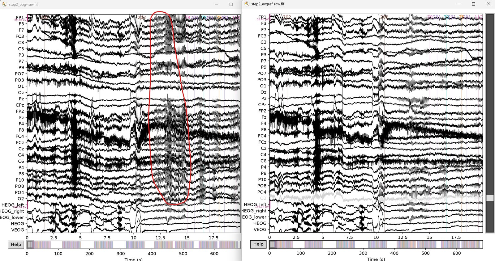
（观察到，左侧原先在12.5s-15s的共同噪声已经在右图中明显被处理掉了）
-
粗滤波：
1.采用0出.1Hz的高通，为了去掉汗、皮肤电位、电极慢慢变化造成的漂移（EOG数据也参与）
实际效果如下：
EEG power by frequency band (µV²/Hz)
Band Before After Change 0.01–0.05 Hz (drift) 31,493.54 1,392.11 −95.6% 0.05–0.1 Hz (transition band) 10,612.89 6,813.60 −35.8% 0.1–1 Hz 935.33 933.49 −0.2% 1–4 Hz (δ) 14.32 14.26 −0.4% 4–8 Hz (θ) 1.58 1.57 −0.5% 8–13 Hz (α) 5.99 5.99 0.0% 13–30 Hz (β) 2.05 2.05 0.0% 结果存为
data/step2_hp-raw.fif2.再采用30Hz的低通，为了去掉60Hz交流电的人体感应信号以及一部分肌电。（关于滤波原理与具体操作参考HTML2，这里面原理部分是claude写的，我没学会）（EOG数据也参与）
展开：EEG 滤波原理（HTML2）
实际效果如下：
EEG 各频段功率（µV²/Hz）
频段 前 后 变化 1–4 Hz 13.29 13.26 −0.3% 4–8 Hz 1.513 1.510 −0.2% 8–13 Hz 5.493 5.482 −0.2% 13–20 Hz 1.358 1.355 −0.2% 20–30 Hz 2.724 2.721 −0.1% 30–34 Hz（过渡带开始） 3.319 2.292 −30.9% 34–38 Hz（过渡带） 3.458 0.135 −96.1% 38–45 Hz 3.094 0.0004 ≈ −100% 45–55 Hz 2.821 0.0002 ≈ −100% 55–65 Hz 2.357 0.0002 ≈ −100% 65–100 Hz 1.448 0.0001 ≈ −100% 100–200 Hz 0.438 0.00003 ≈ −100% 60 Hz 这一个频点 2.355 0.0002 ≈ −100% 结果继续存为
data/step2_hp-raw.fif此时我们发现Oz通道的标准差 只降了 0.2%，标准差仍然约 100 µV，是旁边 O1、O2（约 19 µV）的 5 倍。这说明它的噪声集中在低频，不是肌电，更像电极接触不好造成的跳动或漂移。我们用功率谱来看是否存在问题
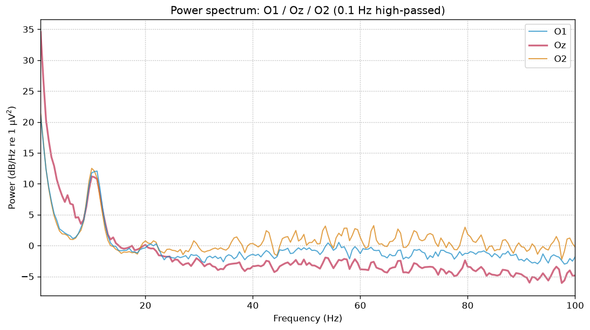
可以发现，Oz在低频处明显高于其他两个电极，提示很有可能存在电极接触不良。N170 的脸–车差异主要在两侧枕颞区：PO7、PO8、P7、P8、P9、P10。Step 3 的质量关卡看的是 PO8 和 PO7，完全用不到 Oz。所以我们将它标记为坏导。重新进行上面两次滤波，存储为：
step2_eog-raw.fif、step2_avgref-raw.fif、step2_hp-raw.fif、step2_lp-raw.fif3.采取ICA滤波：也就是先找出眼电成分，从数据里减掉
展开：ICA 去眼电的原理
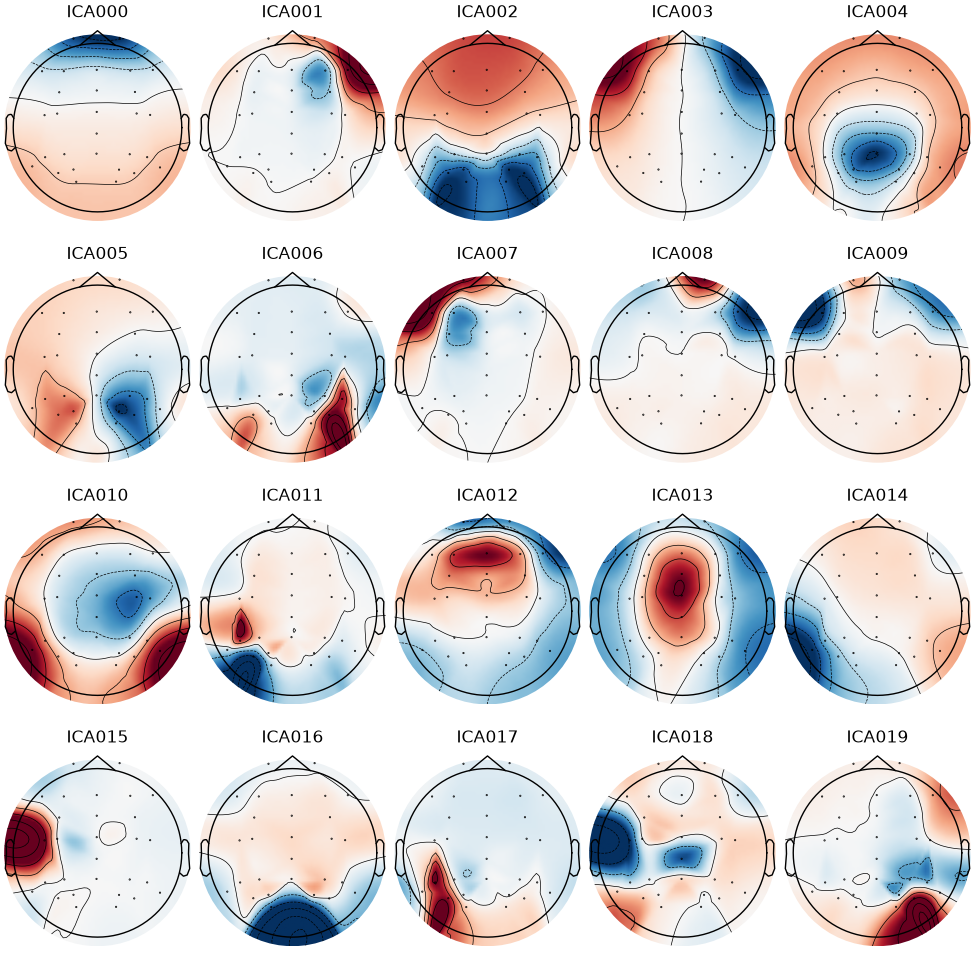
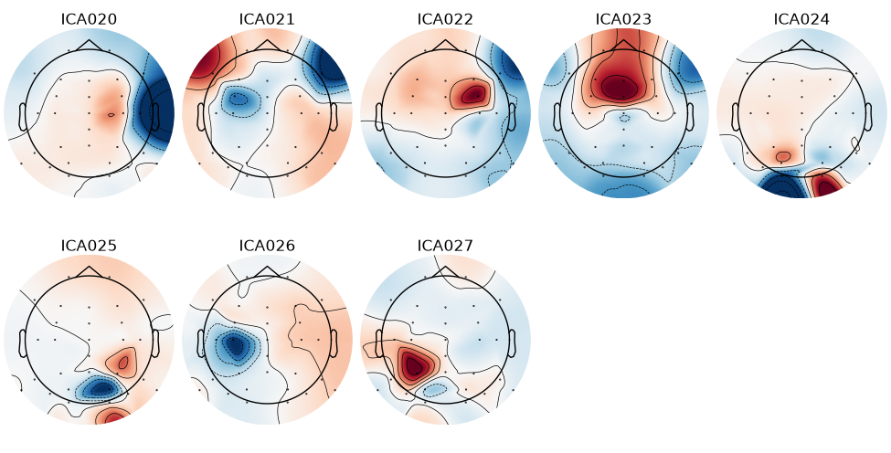
发现ICA000和 VEOG 的相关性 0.94，峰度 12，判断为眨眼的眼电；ICA003和 HEOG 的相关性 0.77，阶跃和 HEOG 同步，判断为水平眼动。
去掉这些成分之后，结果保存为
data/step2_ica-raw.fif。去除的表现如下：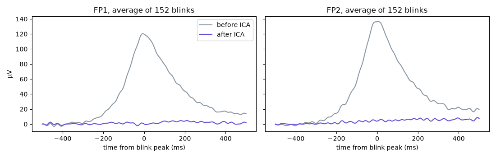
ICA 结果存为
data/step2_ica-ica.fif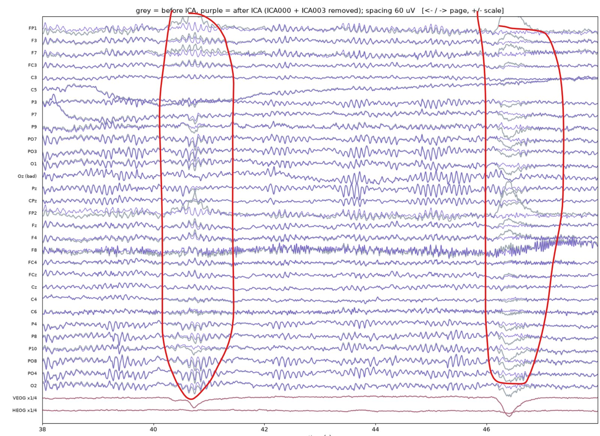
（可以发现40s&46s左右眼电很大，当然，已经被去除）
-
将每个刺激前的200ms-刺激后的800ms的波截取出来，切作一个epoch。每个 epoch 一开始的电压水平都不太一样，有的偏高几 μV，有的偏低，这是残留的慢漂移，和刺激无关。消除它做法是：每个 trial、每个通道，算出 −200 到 0 ms 的平均电压，然后从整段里减掉它。
- x(t)：这个 trial 在这个通道上、时间 t 的电压；
- x̄_基线：同一个 trial、同一个通道，−200 到 0 ms 的平均电压。
校正之后，每个 trial 刺激前的平均都是 0，刺激后的数值表示"相对于刺激前，电压变化了多少"。
这一步我们留在粗滤波之后做，因为有的滤波核长，可能会跨epoch。
-
细滤波：剔除符合以下特征的epoch：
1.某个头皮电极的电压在这一秒里突然变得很大，远远超出正常脑电的范围。
这往往是被试动了一下、咬牙、咳嗽、电极松动等等。这些伪迹比脑电大得多，留着会严重扭曲平均波形，也会干扰 decoding。这个阈值需要根据每个被试调整，毕竟有些人头皮薄，有些人头皮厚，需要结合具体的录像情况判断该伪迹是否真的是伪迹。阈值不会严于三个标准差,同时阈值需要大于100 µV2.用 Step 2 第 1 条算出的双极眼电。在刺激呈现的时间段里，VEOG 出现大的尖峰说明在眨眼，HEOG 出现明显的阶跃（突然升高或降低）说明眼睛转了。超过阈值就删。因为这往往说明被试没有看清楚照片或者眼动信号足以干扰ERP记录。
3.行为上有问题的epoch：N170 任务里，被试每看到一张图都要按键判断：是物体（人脸或汽车），还是纹理（打乱后的图）。
情况 为什么要删 答错了 说明被试这一次可能走神了，或者没认真看，大脑处理得不完整 反应时短于 200 ms 太快了，人不可能这么快看清并判断，多半是提前乱按 反应时长于 1000 ms 太慢了，可能在发呆或分心 200–1000 ms 这个范围是 ERP CORE 官方用的。
剔除结果是删掉 92 个、保留 228 个。四类分别剩：face 60、car 48、scrambled_face 62、scrambled_car 58。
Step 3：传统 ERP（质量关卡）
第 1 步：把 trial 分成两堆
从 step2_clean-epo.fif 里取出完整的脸（60 个）和完整的车（48 个）。
我们只比较脸和车，打乱的图这一步用不上。
第 2 步：每一堆取平均
在每个电极上，把 60 个脸 trial 的波形取平均，得到「看脸的平均波形」；车也一样。
单个 trial 里噪声比大脑反应大得多。平均以后，理论上每次时机都不一样的噪声互相抵消，每次都在同一时刻出现的反应就留下来了。
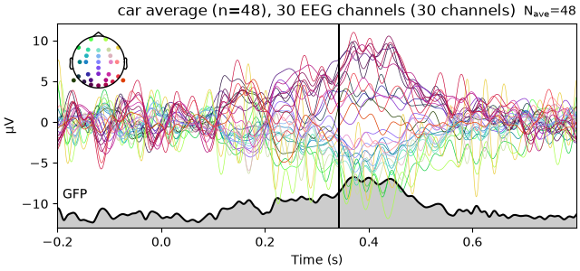
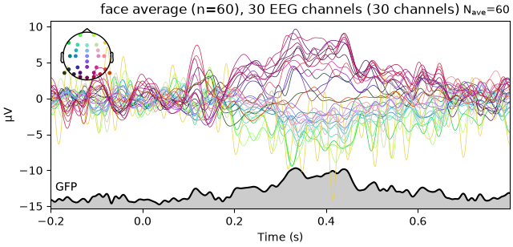
平均确实压低了噪声：刺激前的 −200 到 0 ms 还没有大脑反应，这段的波动可以当作噪声的大小。
| 类别 | 单个 trial 的噪声 | 平均后 | 缩小倍数 | 理论值 √n |
|---|---|---|---|---|
| 脸（60 个） | 8.19 µV | 1.26 µV | 6.5 倍 | 7.7 |
| 车（48 个） | 8.31 µV | 1.50 µV | 5.5 倍 | 6.9 |
如果噪声每次都完全独立、随机，平均 n 次会缩小 √n 倍。实际比理论值略少，说明还有一部分噪声不是完全随机的，比如在一段时间里持续存在的 α 波或慢漂移，平均也消不掉。
第 3 步：在 PO8、PO7 上画图，加一条「脸减车」
画三条线：看脸的平均、看车的平均，以及两者相减得到的差异波。
110–150 ms 附近，文献上（3）来说差异波应该往下（负的），也就是脸比车低。注意，脸和车两条线可能都在 0 以上，这没关系，看的是脸比车低。
第 4 步：算一个数，再画一圈误差范围
算出差异波在 110–150 ms 的平均值，同时在差异波外面画一圈阴影，表示误差范围。
- 一个数方便记录，也方便和后面第 6 步比较。
- 单个被试噪声大，一条线可能是碰巧。阴影整个落在 0 以下，才说明差异不是噪声造成的。
- 110–150 ms 是事先定好的，不管结果怎样都不改。
实际数据如下：
| 电极 | 脸 − 车（110–150 ms） | 95% 置信区间 |
|---|---|---|
| PO7 | −1.65 µV | [−4.93, 1.63] |
| PO8 | +0.37 µV | [−2.80, 3.53] |
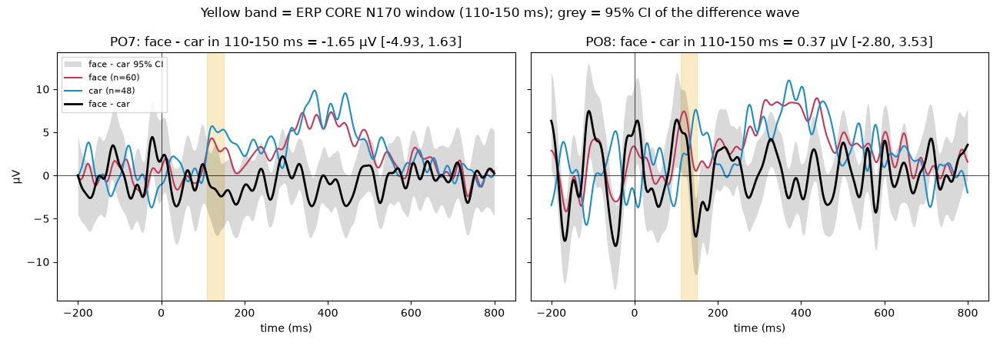
由于95%置信区间都跨过了0，所以差异波并不显著。观察到这个差异波的摆动很有节律，推测可能是一部分α波的残留。但是鉴于N170本身就会落在α波的频段里面，所以再次滤波的想法被否决了。
第 5 步：画地形图
每个电极都算一次「脸减车在 110–150 ms 的平均」，把这 30 个数画在头上。
根据文献预计差异出现在 N170 该出现的地方，也就是后脑两侧（1）。如果最负的地方在前额，可能是眼电没去干净（2）；如果只集中在一个电极，可能是那个电极有噪声。
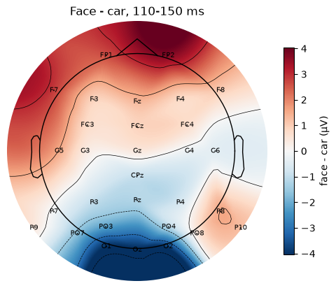
这个地形图没有明显的不对，但是最负处和文献有偏差
第 6 步：稳健性检查
滤波会改变波形，而 30 Hz 这个数是我们自己选的。要确认看到的效应来自大脑，而不是来自这个选择。
我们把 30 Hz 低通换成 40 Hz，再换成不做低通，其他完全不变（同一个 ICA、同一批删掉的 trial），各画一次 PO8 的差异波，三条叠在一起，再各算一次 110–150 ms 的平均值。
结果如下：
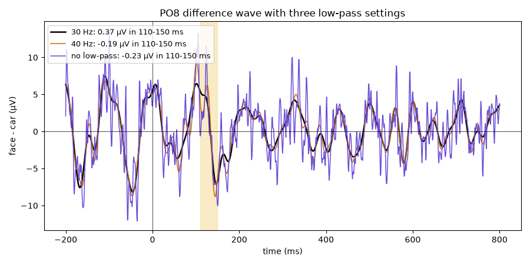
| 低通设置 | PO8 脸 − 车（110–150 ms） |
|---|---|
| 30 Hz（原来的） | +0.37 µV |
| 40 Hz | −0.19 µV |
| 不做低通 | −0.23 µV |
三条线基本重合：不做低通只是多了很多高频毛刺，整体的起伏完全一样。
三个数都接近 0：彼此只差约 0.6 µV，而第 4 步里 PO8 的 95% 置信区间是约 ±3 µV，这点差别远小于噪声。
结论没变：三种设置下，PO8 在 110–150 ms 都没有可靠的"脸比车低"。
但正负号会翻转：30 Hz 是正的，40 Hz 和不低通是负的。这说明这个接近 0 的数本身不稳定，不能把它读成"脸更正"或"脸更负"，只能说"没有差异"。
稳健性检查基本通过
Step 4：time-resolved decoding
预处理
把 epoch 从 1024 Hz 降到 100 Hz。每个 epoch 从 −200 到 800 ms，降完是 100 个时间点，每个点相隔 10 ms。由于之前已经做过低通处理，所以50hz以上的信息已经均不保留，100hz这个数的选取是符合香农采样定理的。
训练方法1：
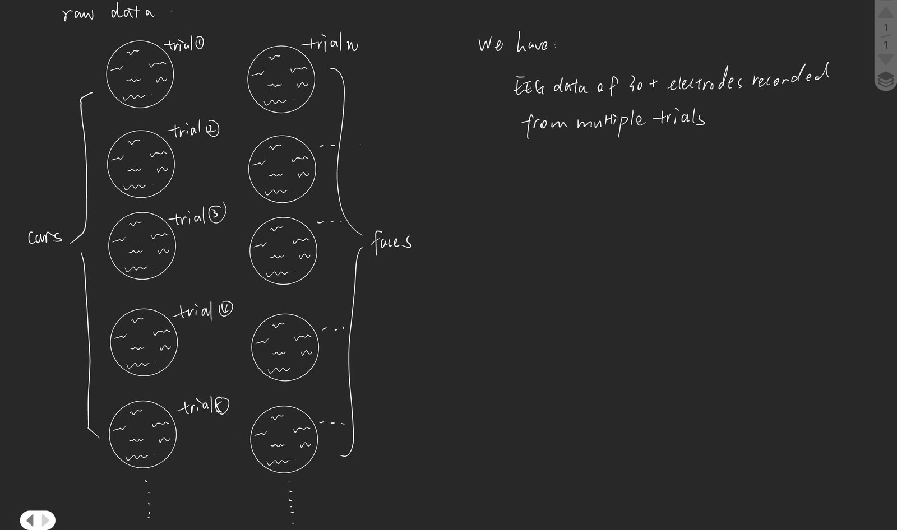
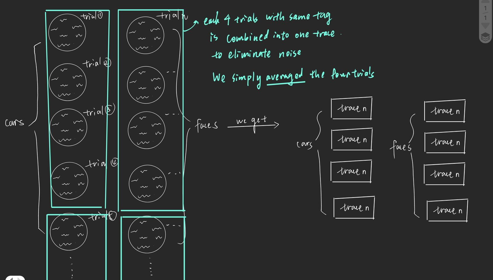
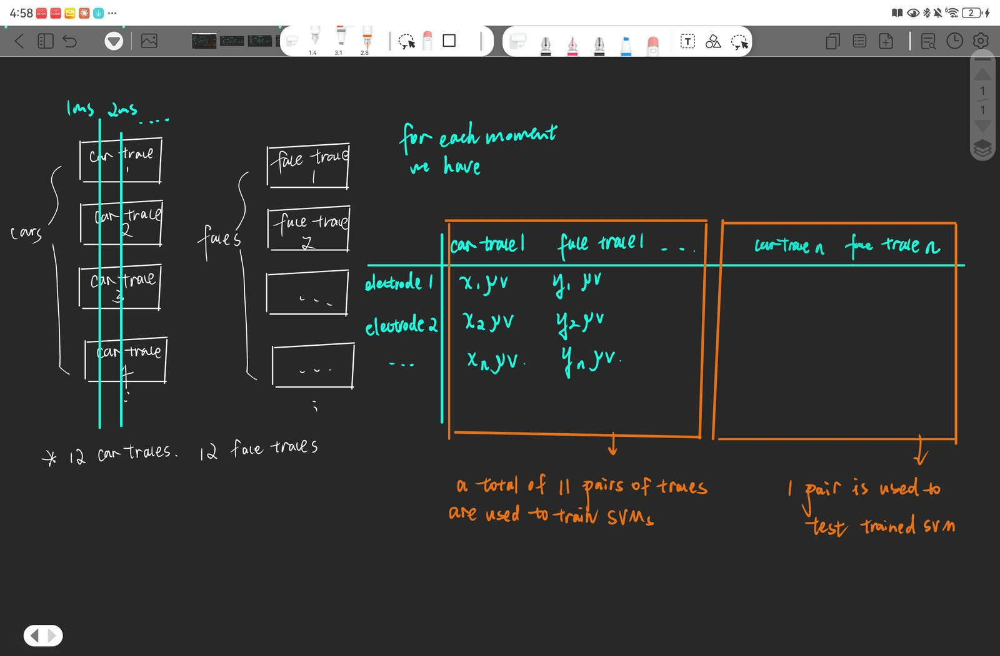
在这个方法中，一个 SVM 只被输入某个时间点上 30 个电极的数据进行训练（如图）：训练用 11 对 trace，也就是 22 个 30 维向量；剩下 1 对（2 个向量）用来测试。交叉验证（留一对，共 12 折）后，得到该时间点的 12 个 SVM，他们的准确率平均为一个值。我们一共有 100 个时间点，最后得到100个这样的值。
展开：拉格朗日乘子与支持向量（SVM 原理）
训练方法2：
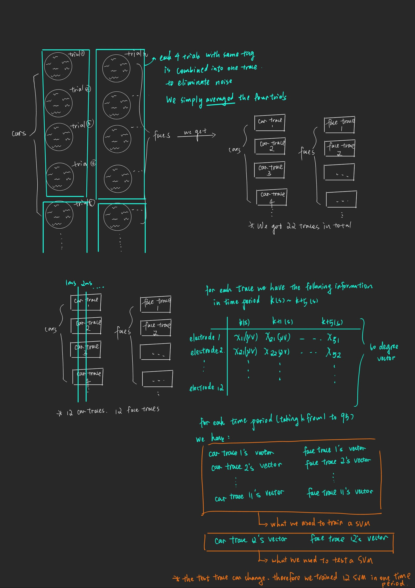
这个方法中，我们需要将某一个时间段内的electrode的数据合并为一个60维的vector,然后投入22个这样的60维数据进行训练。这样的好处是能够学习到波形变化趋势，信息可能较前一种方法更多。
数据记录
SVM的准确率不能直接拿 50% 来比，原因有两个：一是 2000 条曲线共用同一份数据，这份数据自己的噪声平均不掉；二是样本很少时，留一法交叉验证的瞎猜水平本身可能偏离 50%（比如说噪声没有消除干净，导致classifier学到了一些歪门邪道的小技巧来判断）。所以要用置换检验，算出这套流程在「脸和车没有区别」时，准确率实际是什么样子，再拿真实结果和它比。
真实曲线：由于脸的 trial 数（60）多于车的 trial 数（48），我们随机抽取 48 个脸的 trial 进入数据集，使脸的数据量和车齐平。这个抽取我们做 20 次。我们还要把每 4 个同类 trial 平均成一条 trace 来减少噪声。每次抽取后，把每类的 48 个 trial 随机打乱、每 4 个一组，切成 12 组；这样的随机分组每次抽取后做 100 次。所以我们一共得到 20 × 100 = 2000 组数据。每一组数据都按上述分析得到一条"准确率随时间变化"的曲线，一共 2000 条。把这 2000 条曲线在每个时间点上取平均，就是真实曲线。
零分布：绘制零分布时，我们打乱 EEG 信号和图片内容（脸/车标签）的对应关系。这时训练出来的 SVM 理论上完全无法通过 EEG 信号预测图片内容，我们称它为瞎猜 SVM。打乱后，被标为脸的仍是 60 个 trial、被标为车的仍是 48 个，只是里面真脸和真车混在了一起。
每打乱一次（称为一次置换），就按和真实曲线一样的步骤算一条瞎猜曲线，只是抽样数量少一些：抽脸同样做 20 次，但每次抽取后的随机分组只做 10 次，得到 20 × 10 = 200 条曲线，取平均得到 1 条瞎猜曲线（共 1200 × 200 = 24 万个 SVM）。
这样的置换一共做 1000 次，得到 1000 条瞎猜曲线，这就是零分布：每个时间点上都有 1000 个瞎猜准确率。
（瞎猜曲线每条只平均 200 条，比真实曲线的 2000 条少，所以零分布会更宽一些，判断偏保守：只会让显著更难出现，不会制造假阳性。这样做是为了在可接受的时间里完成 1000 次置换。）
工具调用与程序编写
由于现在大多数SVM模型都用于应对大维度向量训练或者多样本训练，而本次实验中收到participant本身只能做这些次trial的限制，向量的维度不大，样本不多，但是重复次数奇大。如果单纯的使用现有的库，全部数据跑完需要整个晚上。所以我让claude帮我按照libsvm 的源码重新写，输出为step6_gpu_lib.py，仅调用了pytorch库。我们对于两种方法均随机选择部分数据与sklearn的计算结果进行比较，两者的计算结果99.98% 的预测一致，差别来自浮点运算顺序
运行方法1的代码为step6_main.py 和 step6_permutation.py
运行方法2的代码为step8_window.py
统计
通过对比瞎猜曲线和置换检验曲线，我们得以观察ERG信号里面是否有判断车/脸的电信号。
由于我们需要多次进行检验，所以机械地定义一个阈值p是不足够的，我们还需要规定一个false discovery rate来解决假阳性问题。以下是对方法的简介。
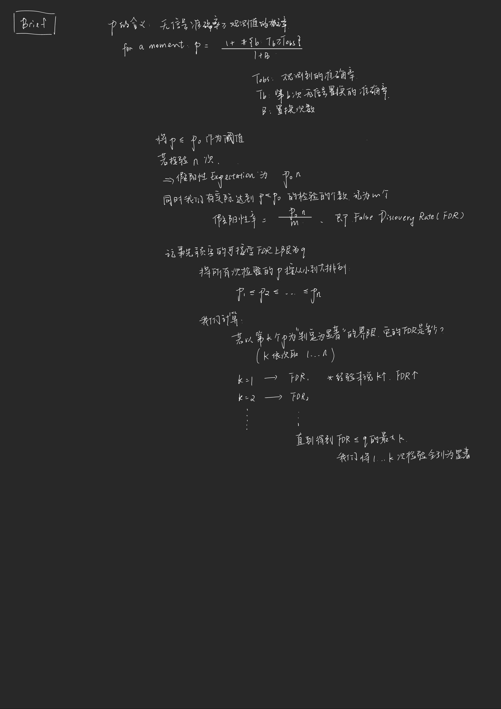
在本次统计中，我们将FDR定为0.05
方法一：没有任何一次检验通过了标准，即使在图像上看似在N170附近有一个高于瞎猜曲线的峰。我们的检验中最低的FDR为0.09，也就是说假阳性率为9%，这无法达到统计学上的显著。
方法二：150–180 ms 有 4 个连续的窗口通过了 FDR 校正。显著的 4 个窗口合起来，覆盖的数据范围是 130–200 ms
参考文献
（1）Bentin, S., Allison, T., Puce, A., Perez, E., & McCarthy, G. (1996). Electrophysiological studies of face perception in humans. Journal of Cognitive Neuroscience, 8(6), 551–565. 第一次报道 N170，发现它在后颞区（当时叫 T5/T6，大致是现在的 P7/P8）最大，右侧更强。
（2）Luck, S. J. (2014). An Introduction to the Event-Related Potential Technique (2nd ed.). MIT Press. 讲伪迹剔除和校正的那一章。
（3）Kappenman, E. S., Farrens, J. L., Zhang, W., Stewart, A. X., & Luck, S. J. (2021). ERP CORE: An open resource for human event-related potential research. NeuroImage, 225, 117465. 把 N170 定义为 PO8 上「脸减车」差异波在 110–150 ms 的平均幅值，所有被试的总平均是负的，峰值在 131 ms 左右。我们的 110–150 ms 窗口、PO8 电极、131 ms 这个参考值，都出自这篇。
（4）Nemrodov, D., Niemeier, M., Patel, A., & Nestor, A. (2018). The neural dynamics of facial identity processing: Insights from EEG-based pattern analysis and image reconstruction. eNeuro, 5(1), ENEURO.0358-17.2018. https://doi.org/10.1523/ENEURO.0358-17.2018 用于：trace 平均、线性 SVM、留一交叉验证、置换检验 + FDR、时间窗解码（方法 2）。
（5）Benjamini, Y., & Hochberg, Y. (1995). Controlling the false discovery rate: A practical and powerful approach to multiple testing. Journal of the Royal Statistical Society: Series B, 57(1), 289–300. https://doi.org/10.1111/j.2517-6161.1995.tb02031.x 用于：FDR 校正。
（6）Phipson, B., & Smyth, G. K. (2010). Permutation p-values should never be zero: Calculating exact p-values when permutations are randomly drawn. Statistical Applications in Genetics and Molecular Biology, 9(1), Article 39. https://doi.org/10.2202/1544-6115.1585 用于：p 值公式的分子分母为什么都加 1。
（7）Hyvärinen, A. (1999). Fast and robust fixed-point algorithms for independent component analysis. IEEE Transactions on Neural Networks, 10(3), 626–634. https://doi.org/10.1109/72.761722 用于：Step 2 的 ICA（FastICA）。
（8）Chang, C.-C., & Lin, C.-J. (2011). LIBSVM: A library for support vector machines. ACM Transactions on Intelligent Systems and Technology, 2(3), Article 27. https://doi.org/10.1145/1961189.1961199 用于：SVM 求解器（sklearn 的底层，GPU 版照它的算法重写）。
（9）Fan, R.-E., Chen, P.-H., & Lin, C.-J. (2005). Working set selection using second order information for training support vector machines. Journal of Machine Learning Research, 6, 1889–1918. 用于：GPU 版 SMO 里"二阶选工作集"的方法。
软件
（10）Gramfort, A., Luessi, M., Larson, E., Engemann, D. A., Strohmeier, D., Brodbeck, C., Goj, R., Jas, M., Brooks, T., Parkkonen, L., & Hämäläinen, M. (2013). MEG and EEG data analysis with MNE-Python. Frontiers in Neuroscience, 7, 267. https://doi.org/10.3389/fnins.2013.00267（本项目使用 MNE 1.13.2）
（11）Pedregosa, F., Varoquaux, G., Gramfort, A., et al. (2011). Scikit-learn: Machine learning in Python. Journal of Machine Learning Research, 12, 2825–2830.（本项目使用 scikit-learn 1.9.1）
（12）Paszke, A., Gross, S., Massa, F., et al. (2019). PyTorch: An imperative style, high-performance deep learning library. In Advances in Neural Information Processing Systems 32 (pp. 8024–8035).（本项目使用 PyTorch 2.11.0）
（13）Harris, C. R., Millman, K. J., van der Walt, S. J., et al. (2020). Array programming with NumPy. Nature, 585, 357–362. https://doi.org/10.1038/s41586-020-2649-2
（14）hu-neuro-pipeline（版本 0.9.0）[软件]. https://github.com/alexenge/hu-neuro-pipeline 用于：下载数据。作者和推荐的引用格式请到它的 GitHub 页面核对。
数据
（15）ERP CORE N170 数据集，Open Science Framework 项目 pfde9. https://osf.io/pfde9/（只用了被试 sub-001）
本项目的代码由 Claude（Anthropic）协助编写，部分分析设计采纳了 Claude 的建议